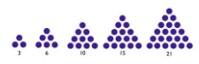
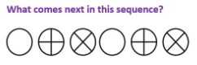

Com o que se parece um teste de lógica 🔍
No Brasil, os formatos mais comuns de testes de lógica são
Perguntas sobre probabilidade:
Uma formiga, um rato e uma cobra atravessam um deserto. Sabe-se que a probabilidade da cobra, do rato e da formiga conseguirem percorrer nesse deserto mais que 10 km são, respectivamente, 4/5, 3/5 e 3/4. Considerando os eventos independentes, a probabilidade de somente o rato conseguir percorrer mais que 10 km é:
a) 3%
b) 5%
c) 7%
d) 9%
e) 12%
Perguntas sobre sequências lógicas:


Avante! 🚀